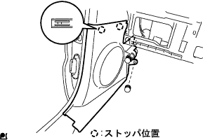
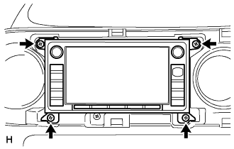
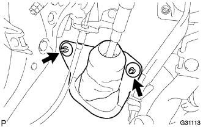
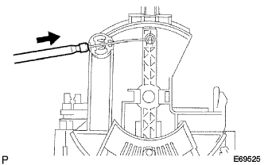
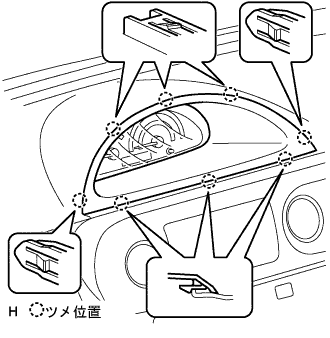

インストルメント パネルSUB-ASSY LWR 取り付け |
| 1. ボルト、スクリュー、ナット一覧 |

| 2. インストルメントパネルロワー W/リインフォースメント取り付け |
スクリュ<B>3本でインストルメントパネルLWRにインストルメントパネルレジスタコネクタRHを取り付ける。

ドアコントロールコンピュータウィズレシーバおよび、スマートキーコンピュータ(スマート装着車)をインストルメントパネルリインホースメントにボルトで取り付ける。
スクリュ<<F or G or H>>1本、クリップ<<b>>2個をで、インストルメントパネルリインホースメントをインストルメントパネルLWRに取り付ける。
インストルメントパネルロワー W／リインフォースメントを仮置きし、各クランプおよび、コネクタを接続する。
ボルト<A>8本<E>2本、クリップ<b>1個、ナット<K>2個でインストルメントパネルロワー W／リインフォースメントを取り付ける。
パーキングブレーキペダルおよび、ブレーキペダル上部のボルトを取りつける。
| 3. インストルメントパネル トゥー カウル ブレス CTR取り付け |
ボルト<E>1本、ナット<K>1個で、インストルメントパネルツウカウルブレス CTRを取り付ける。
| 4. カウルサイドトリム ボード LH取り付け |
|  |
ツメ2箇所、クリップ1箇所のかん合をあわせ、樹脂クリップでカウルサイドトリムボードLHを取り付ける。
| 5. カバー取り付け |
ツメのかん合を合わせ、カバーを取り付ける。
| 6. インストルメントパネルアンダ カバーSUB-ASSY NO.1取り付け |
 |
インストルメントパネル アンダカバー No.1の下部のヒンジ部のかん合させ、ツメ９箇所のかん合を合わせクリップ<a>2個でインストルメントパネル アンダカバー No.1を取り付ける。
| 7. ラジオチューナオープニングカバーW/ブラケット取り付け |
スクリュ4本で、ラジオチューナオープニングカバーW/ブラケットを取り付ける。
| 8. ラジオレシーバASSY W/ブラケット取り付け |
 |
スクリュー4本を取りはずす。
各コネクターを切り離し、ラジオレシーバASSY W/ブラケットを取りはずす。
| 9. ナビゲーションレシーバASSY W/ブラケット取り付け |
|  |
スクリュー4本を取りはずす。
各コネクターを切り離し、ナビゲーションレシーバASSY W/ブラケットを取りはずす。
| 10. ステアリング コラムASSY取り付け |
 |
ステアリングコラムASSYを手前から差し込み、ステアリングコラムクランプをインストルメントパネルリインホースメントASSYにクランプする。
ボルト３本で、ステアリングコラムASSYを取り付ける。
ステアリングインターミデイエイトNo.3シヤフトとステアリングスライデイングヨークの合わせマークを合わせ取り付ける。
ステアリングスライデイングヨーク両端のボルトを本締めする。
各コネクタを接続する。
ワイヤハーネスをステアリングコラムチユーブにクランプさせる。
| 11. フロントタイヤ直進状態確認 |
フロントタイヤが直進状態になっていることを確認する。
| 12. コラムシフト パーキング ロックケーブルASSY接続 |
ボルトで、パーキングロックケーブル(ペダル側)を仮付けする。
パーキングロックケーブルをコラムASSYに接続する。
パーキングロックケーブル点検·調整(要領は
参照)後にボルト締め付ける。
| 13. コラムシフト トランスミッション コントロールケーブルASSY接続 |
エンジン側からコントロールケーブルを通し、ナットでブラケットを取り付ける。
クリップで、コントロールケーブルをコントロールケーブルブラケットに取り付ける。
ナットで、コントロールケーブルをトランスアクスルに接続する。
 |
新品のクリップをケーブルブラケットに取り付け、コントロールケーブルをコラムASSYに取り付ける。
シフトレバーをNレンジにしてPレンジ側へ押し付け、コントロールケーブルエンド部を引っ張り、バックラッシュを無くした状態でコントロールケーブルをベルクランクにナットで取り付ける。
| 14. ステアリングコラムホールカバー プレート取り付け |
|  |
クリップ2個でステアリング コラム ホールカバープレートを取り付ける。
| 15. ウインドシールド ワイパ スイッチASSY取り付け |
 |
ツメをかん合させてウインドシールドワイパスイッチを取り付ける。
コネクタを接続する。
| 16. ヘッドランプ デイマ スイッチASSY取り付け |
 |
ツメをかん合させてヘツドランプデイマスイツチASSYを取り付ける。
コネクタを接続する。
| 17. スパイラル ケーブルSUB-ASSY取り付け |
ターンシグナルスイツチをニユートラル位置にする。
ツメのかん合3箇所を合わせて、スパイラルケーブルを取り付ける。
エアバツグ用コネクタおよびコネクタを接続する。
| 18. スパイラルケーブルセンタリング |
IGスイツチがOFF(LOCK)になっていることを確認する。
バツテリーのマイナスターミナルがはずしてあることを確認する。
 |
スパイラルケーブルを反時計方向にロツクするまで回す。
 |
スパイラルケーブルをロツクした位置から時計方向に2.5回転戻し、図のセンターマークを合わせる。
| 19. シフトレバー位置点検 |
シフトレバーをNレンジから各レンジにシフトする。このときシフトレバーが円滑に操作でき、各レンジに節度よく動き、ポジションインジケータが表示しシフトレバー位置が一致していることを確認する。
シフトレバーを手前に引いたときのみP、R、Lの各レンジにシフトできることを確認する。
エンジンを始動し、Dレンジにシフトしたとき車両が前進し、Rレンジにシフトしたときブザー音がして車両が後退することを確認する。
| 20. シフトレバー位置調整 |
コントロールシャフトレバーのナットをはずし、コントロールケーブルを切り離す。
コントロールシャフトレバーを反時計方向へ止まるまで回し、そこから2段階戻した位置(Nレンジ)にする。
 |
図のように、シフトレバーをNレンジにシフトし、Rレンジ側に押し付けた状態で、コントロールケーブルを取り付け、ナットで締付ける。
調整後、操作具合および作動を点検する。
| 21. シフトロック作動点検 |
シフトレバーをPレンジにする。
イグニションスイッチをLOCKにする。
シフトレバーを操作したときPレンジ以外にシフトできないことを点検した後、イグニションスイッチをACCまたはONにしブレーキペダルを踏んだとき、Pレンジ以外にシフトできることを点検する。
| 22. キーインタロック作動点検 |
イグニションスイッチをACCにする。
ブレーキペダルを踏んで、シフトレバーをPレンジ以外にシフトする。
イグニッションキーがLOCK位置に回せないことを点検する。
シフトレバーをPレンジにシフトし、イグニッションキーをLOCK位置に回しイグニッションキーが抜けることを点検する。
| 23. ステアリングコラム カバー取り付け |
 |
スクリュ3本でステアリングコラムカバーを取り付ける。
| 24. ステアリング ホイールASSY取り付け |
ステアリングホイールASSYの合わせマークをステアリングメインシヤフトASSYの合わせマークに合わせてナットで取り付ける。、
| 25. ステアリングホイール位置点検 |
| 26. ホーン ボタンASSY取り付け |
トルクスソケットレンチ(T30)を使用して、トルクスボルト2本を締め付ける。
| 27. インストルメントパネルフィニッシュ パネル LWR取り付け |
 |
各コネクタおよび、フードオープナを接続し、ツメ5箇所のかん合を合わせクリップ<ａ>2個でインストルメントパネルフィニッシュパネルLWRを取り付ける。
| 28. インストルメントパネルフィニッシュ パネル LWR CTR取り付け |
 |
スクリュ3本でインストルメントカップホルダを取り付ける。
パワーアウトレットソケットのコネクタを接続する。
ツメ8箇所のかん合を合わせ、クリップ<ｃ>2個でインストルメントパネルフィニッシュパネル LWR CTRを取り付ける。
| 29. インストルメントパネル ボックスASSY取り付け |
 |
ストッパおよび、ヒンジ部のかん合をあわせ、インストルメントパネルボックスASSYを取りつける。
| 30. インストルメントパネル W/パッセンジャーエアバッグASSY取り付け |
スクリュ<B>2本で、ヒータ ツウ レジスタ ダクト No.1をインストルメントパネル W/ パッセンジャーエアバッグASSYに取り付ける。

スクリュ<B>2本で、サイド デフロスタノズル ダクト No.1をインストルメントパネル W/ パッセンジャーエアバッグASSYに取り付ける。
スクリュ<B>2本で、ヒータ ツウ レジスタ ダクト No.3をインストルメントパネル W/ パッセンジャーエアバッグASSYに取り付ける。
スクリュ<B>2本で、サイド デフロスタノズル ダクト No.２をインストルメントパネル W/ パッセンジャーエアバッグASSYに取り付ける。
インストルメントパネル W／パッセンジャーエアバッグASSYの車両前方側の位置を先に合わせ、中央部のコネクタおよび、クランプを接続し、手前側のツメ7箇所のかん合をあわせ、スクリュ<C>もしくは、<D>４本でインストルメントパネル W／パッセンジャーエアバッグASSYを取り付ける。
| 31. インストルメントパネルパッセンジャーエアバッグASSY用コネクター接続 |
 |
インストルメントパネルパッセンジャーエアバッグASSY用コネクターを接続する。
| 32. エアコンディショナ コントロールASSY取り付け（Ａ／Ｃマニュアル） |
エアインレットダンパコントロールケーブル取り付け(除く寒冷地仕様車)
 |
エアインレットダンパコントロールケーブルのインナーケーブルをアウターケーブルより引き出す。
 |
図のようにインナーケーブルをレバーピンおよびクランプ部に取り付ける。
 |
アウターケーブルをクランプ部にロックするまで挿入する。
デフロスタダンパコントロールケーブル取り付け
|
デフロスタダンパコントロールケーブルのインナーケーブルをアウターケーブルより引き出す。
 |
図のようにインナーケーブルをレバーピンおよびクランプ部に取り付ける。
 |
アウターケーブルをクランプ部にロックするまで挿入する。
エアミックスダンパコントロールケーブル取り付け
|
エアミックスダンパコントロールケーブルのインナーケーブルをアウターケーブルより引き出す。
 |
図のようにインナーケーブルをレバーピンおよびクランプ部に取り付ける。
|  |
アウターケーブルをクランプ部にロックするまで挿入する。
| 33. インストルメントクラスタフィニッシュ パネルSUB-ASSY LWR CTR取り付け（Ａ／Ｃマニュアル） |
コネクタを接続する。
スクリュー2本でインストルメントクラスタフィニッシュパネルLWR CTRをエアコンディショナコントロールASSYに取り付ける。
ツメを6箇所かん合させて、スクリュー2本でインストルメントクラスタフィニッシュパネルLWR CTRを取り付ける。
| 34. コントロール ノブSUB-ASSY取り付け（Ａ／Ｃマニュアル） |
 |
ヒータコントロールノッブ2個をインストルメントクラスタフィニッシュパネルLWR CTRに取り付ける。
| 35. センタクラスタモジュールコントロールASSY取り付け（Ａ／Ｃオート） |
各コネクタを接続する。
 |
ツメを6箇所かん合させて、センタクラスタモジユールコントロールASSYを取り付ける。
| 36. インストルメントパネルフィニッシュ プレート取り付け |
 |
ツメ4箇所のかん合を合わせ、スクリュ<B>1本で、インストルメントパネル フイニツシユプレートを取り付ける。
| 37. インストルメントクラスタフィニッシュ パネルSUB-ASSY CTR取り付け |
 |
ツメ12箇所のかん合を合わせ、インストルメントクラスタフイニツシユパネル CTRを取り付ける。
| 38. インストルメントパネル レジスタASSY NO.1取り付け |
 |
ツメ5箇所のかん合を合わせ、インストルメントパネルレジスタASSY No.1を取り付ける。
| 39. グローブコンパートメント ドアSUB-ASSY取り付け |
 |
スクリュ<J>2本でグラブコンバートメントドアを取り付ける。
| 40. コンビネーションメータASSY取り付け |
 |
コネクタを接続しコンビネーシヨンメータASSYを車両前方に押し込みクリップのかん合を合わせる。
スクリュー2本でコンビネーシヨンメータASSYを取り付ける。
| 41. インストルメントクラスタフィニッシュ パネル NO.1取り付け |
|  |
インストルメントクラスタ フイニツシユパネルを車両前方に押し込み、ツメのかん合を合わせ取り付ける。
| 42. フロントピラー ガーニッシュ LWR LH取り付け |
 |
ツメ4箇所のかん合を合わせ、フロントピラーガーニッシュ LWR LHを取り付ける。
| 43. フロントピラー ガーニッシュ LH取り付け |
 |
ガーニッシュ下部のツメを先に入れる。
全てのクリップをかん合させ、フロントピラーガーニッシュLHを取り付ける。
| 44. ピラーNO.1 ガーニッシュ LH取り付け |
ツメをかん合させピラーNo.1ガーニツシユを取り付ける。
| 45. リヤドア オープニングトリム ウェザストリップ LH取り付け |
ウェザストリップのペイントマーク(黄色および白色、どれか1箇所)とボデー側のウエザストリッツプ取り付け用切り欠き部(矢印部分)を合わせ、リヤドアオープニングトリムウエザストリップLHを取り付ける。

| 46. フロントドアスカッフ プレート LH取り付け |
 |
フロントドアスカッフプレート LH前端部のツメを差し込む。
ツメおよびクリップををかん合させ、フロントドアスカッフプレートLHを取り付ける。
| 47. フロントピラー ガーニッシュ RH取り付け |
 |
ガーニッシュ下部のツメを先に入れる。
全てのクリップをかん合させ、フロントピラーガーニッシュRHを取り付ける。
| 48. フロントピラー ガーニッシュ LWR RH取り付け |
 |
ツメをかん合させ、フロントピラーガーニッシュLWR RHを取り付ける。
| 49. フロントドア オープニングトリム ウェザストリップ RH取り付け |
 |
ウェザストリップのペイントマーク(白色、どちらか1箇所)を合わせ、フロントドアオープニングトリムウエザストリツプRHを取り付ける。
| 50. カウルサイドトリム ボード RH取り付け |
 |
車両前方に押し込みクリップをかん合させ、カウルサイドトリムボードRHを取り付ける。
| 51. フロントドアスカッフ プレート RH取り付け |
 |
スカッフプレート前端部および後端部のツメをかん合させる。
ツメをかん合させ、フロントドアスカッフプレートRHを取り付ける。
| 52. バッテリ ターミナル接続 |
| 53. エアバッグウォーニングランプ点検 |
参照)